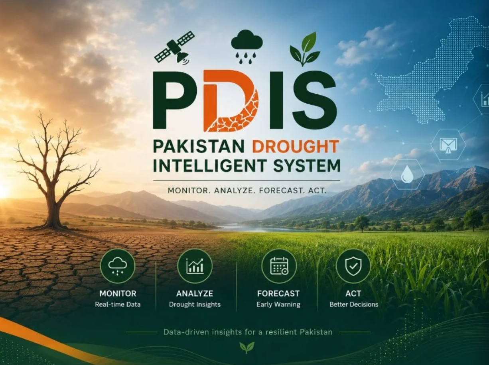
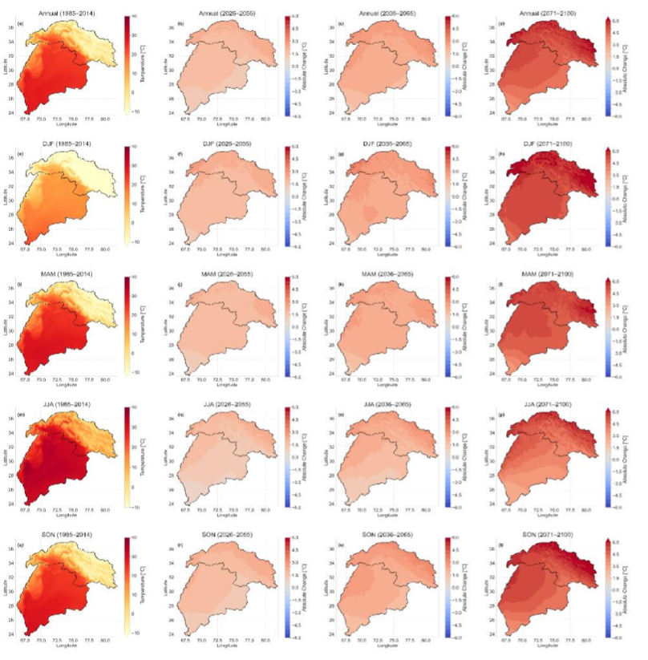
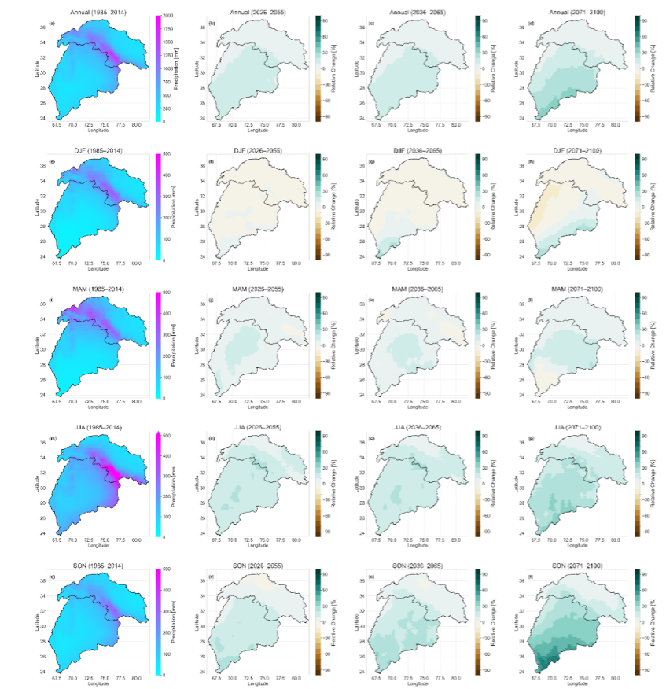
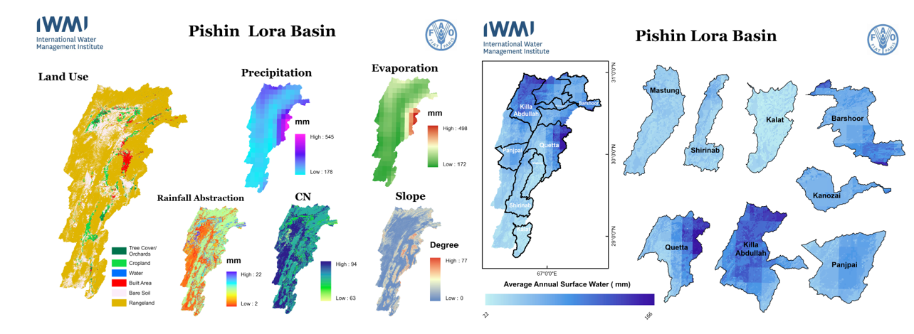
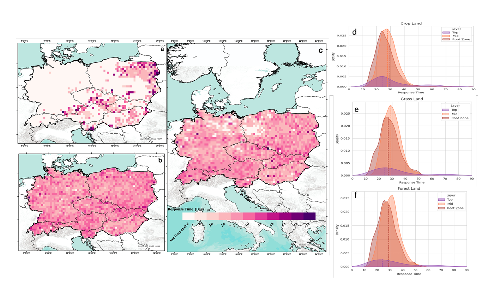
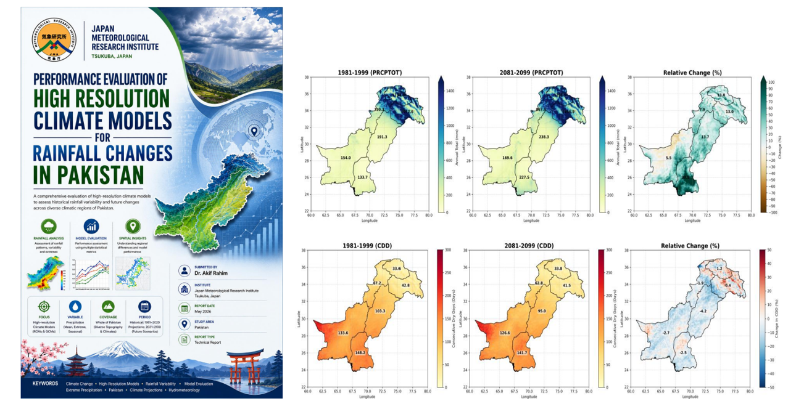
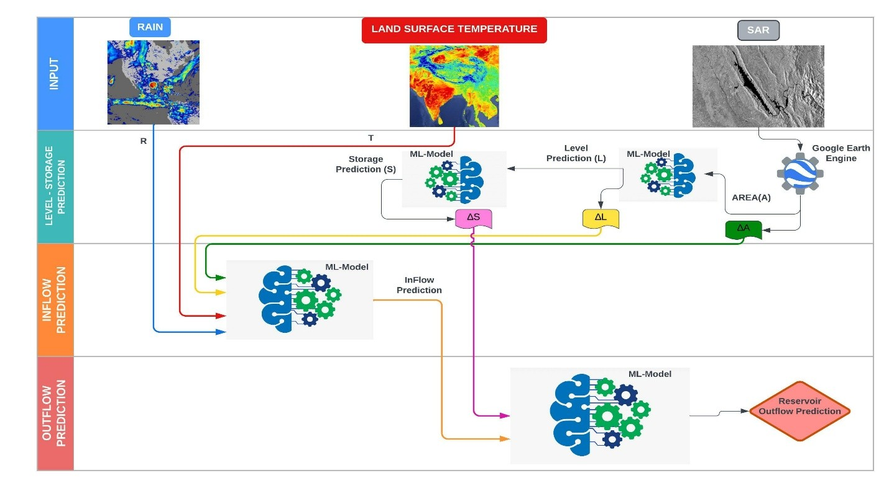

Pakistan Drought Intelligent System (PDIS)
Pakistan Drought Intelligent System for drought monitoring, early warning and decision support. Visit the live platform for maps, indices and forecasts.
Selected projects in climate science, hydrology, drought monitoring, and machine learning applications for water resources.

Pakistan Drought Intelligent System for drought monitoring, early warning and decision support. Visit the live platform for maps, indices and forecasts.


Downscaled high resolution climate projections to assess future water availability in the Indus Basin. Integrated climate projections with hydro economic models to assess future water availability and resource management. Analyzed climate extremes and their projected changes across the Indus Basin to assessed population exposure and vulnerability to extreme climate events across the basin.

Assessed water availability in selected watersheds of Balochistan under an FAO-funded project. Evaluated surface water availability across ungauged river basins and supported mapping of potential aquifer recharge zones.

The ecosystem response to flash drought events was assessed based on gross primary production, revealing a response time of 20-30 days on average across Central Europe. The mid-layer (10-40 cm) and root zone (0-100 cm) of ecosystems exhibited high sensitivity to flash droughts, with croplands demonstrating lower resistance compared to forests. Among forest types, evergreen needle leaf forests exhibited higher resistance to flash droughts.

Pakistan is one of the most climate-vulnerable countries in the world, facing escalating risks from changing precipitation patterns, including catastrophic floods and prolonged droughts. Accurate high-resolution climate information is essential for disaster risk reduction, water resource management, and agricultural adaptation. This study evaluates the performance of the Non-Hydrostatic Regional Climate Model (NHRCM) developed by the Meteorological Research Institute of the Japan Meteorological Agency (MRI-JMA) at 5 km resolution for simulating rainfall characteristics over Pakistan's six topographical zones: Punjab, Sindh, Baluchistan, Khyber Pakhtunkhwa (KPK), Kashmir, and Gilgit Baltistan. The model's historical simulations (1980-1999) are compared against ERA5 reanalysis downscaled to 5 km, and future projections (2080-2099) under the high-emission SSP5-8.5 scenario are analyzed.

Developed transboundary reservoir operation models by integrating remote sensing data with machine learning to predict reservoir operations during the monsoon season. The system provides early estimates of dam releases, enabling timely flood forecasting, downstream evacuation, infrastructure protection, and improved water resources management, thereby enhancing disaster preparedness and reducing flood related risks.